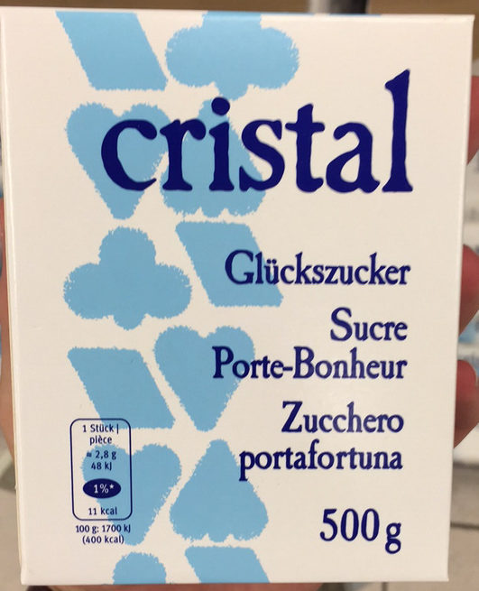
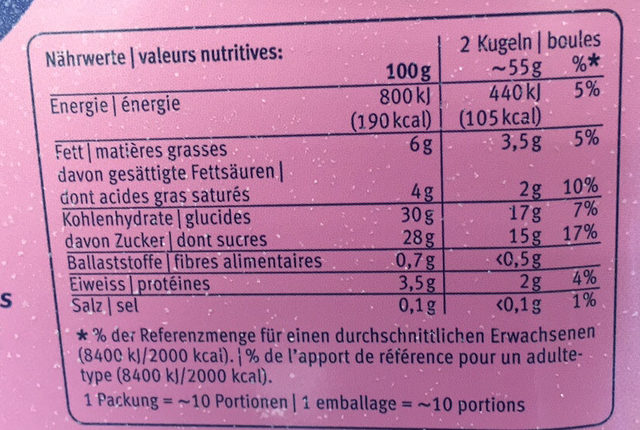
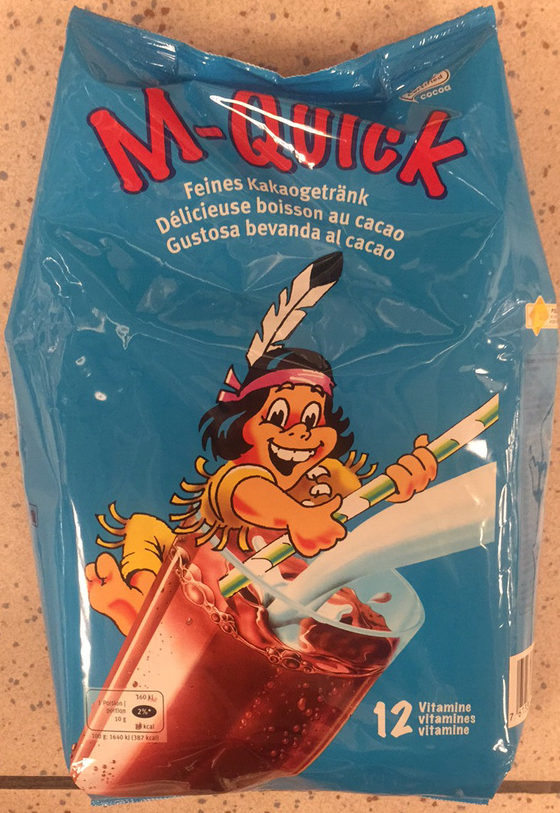
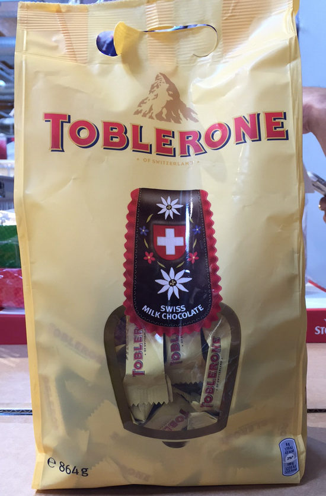

Eeat less sugar,
you're sweet enough already
cs_team_beta_hw2 - Automn 2018

cs_team_beta_hw2 - Automn 2018

Proportion of Sugars per Products, generated with Seaborn from jupyter Notebook.
For the first investigation, we would like to check if we can already see some tendances and have a look on the most sweet Products. As we can see, there is not so much surprise here, Desserts and beverages are shown on the top.
We did some spot checks, in order to have some idea about some sweety prodcuts.
Incredible !!! After a deep analysis, we discovered that the product which is containing the highest quantity of sugar, has a nutriction score of D, which is quite a bad score.
|

|
As written on the nutrition's facts, there is a high quantity of sugar. |
|
What could we say about this ice cream ? |

|
This Product M-Quick is quite amaizing too, a drink to cacao, which contains 80% of sugars and sold as cacao !!! |

|
|
We are starting to hate Data Analysis, why our Toblerone is containing so much sugar ? If the numbers are correct, it is composed with almost 60% of sugars ! |

|
Have a look below, on Word Cloud, the Products containing the most sugars !
Proportion of Sugars per Products, generated with Word Cloud from jupyter Notebook.
Scatterplot of sugar, salt and fat in products
Scatterplot of sugar, salt and fat in products, generated from jupyter Notebook.
What we see above is a set of scatterplots based on all the products that contained valid (in the range 0-100g)
values for sugar, fat and salt content - roughly 99.9 percent of the original data. What this means in practice
is that we have 560974 products plotted. Even with ensuring acceptable ranges however, at least two problems become immediatly apparent when observing the plots.
First, the data we are using is essentially how many percent of a product is made of sugar, fat and salt. The total of these values should never add up to more than a hundred, so we would expect all of the points on the scatterplots to remain firmly underneath a diagonal line drawn from the upper left to lower right corner.
Clearly some products have amazing properties - Markets, Soft Cherry Candy Balls for example consist of 100% sugar and 100% fat, Chewing-gum espagnol consist is 100% sugar, 100% salt.
Incredible. Absolutely incredible.
We would still like to assume that the majority of data is correctly labeled, so in order to get a more true picture of how these three values are distributed we decided to plot the density of the points rather than all the individual points.
Density plot of sugar, salt and fat in products
Density plot of sugar, salt and fat in products, generated from jupyter Notebook.
That paints, quite literally, a different picture.
It appears that in general the values only range within tight boundaries.
It is difficult to interpret the pictures however so we make an effort to reduce the
effect of outliers by removing products with values beyond two standard deviations of the mean, resulting in dropping 12 % of the products.
Density plot of sugar, salt and fat in products without outliers
Density plot of sugar, salt and fat in products without outliers, generated from jupyter Notebook.
Nice.
what we see now is how sugar, fat and salt correlates in the products.
Visually it seems that most products contain zero of all three quantities, maybe that more sugar tend to imply less salt... but honestly, it's still difficult to tell.
To amend that we'll start of with trying to use the Pearson coefficent to see how well the relationships in the plots can be described by a simple line.
Pearson Coefficient matrix
Pearson Coefficient matrix, generated from jupyter Notebook.
In this first attempt at measuring the correlation we used the data for all products, and the results point to
there being absolutely no relationship (indicated by values close to zero).
However, the Pearson coefficent takes outliers too strongly into account, so much like we did when we plotted the density we remove the ten percent of the data that tended to extremes.
Pearson Coefficient matrix without outliers
Pearson Coefficient Matrix without outliers, generated from jupyter Notebook.
In this second matrix some trends do appear, though they are very weak. Sugar and salt is weakly negatively correlated,
with an increase in one coming at the decrease of another. Meanwhile sugar and fat, fat and salt exhibit a weak positive relationship.
Pearson is limited in that it only measures linear relationships, so for the sake of completedness we also decided to have a look at the Spearman coefficient.
Spearman Coefficient without outliers
Spearman Coefficient without outliers, generated from jupyter Notebook.
Using the Spearman coefficent revealed some more trends in the data.
The negative relationship between sugar and salt came out stronger while the the weak positive relationship
between sugar and fat disappeared, and the positive relationship between salt and fat appeared stronger.
Before making any statements, let us reiterate - the data is quite suspect. While we may have been able to remove the most obviously wrong data we are most likely far from catching everything.
But let's assume that:
Then, we can see some weak relationships.
Not to any significant degree no, when taken across all products.
The answer would probably have been quite different if we'd broken the analysis down by categories, such as cake or vegetables.
Amount of products for different types of brand labels
Amount of Products for different types of brand labels, generated from jupyter Notebook.
While our original intent was to use the ten largest producers and divide their products into the categories we were interested in, we quickly discovered
that most of the data was insufficiently labeled. As an example, the biggest producer in the dataset Auchan has 5155 products.
They have sub-brands such as Le Moins Cher Mmm! and Mieux Vivre Bio.
In the dataset however, only two respectively zero respectively one product contains these labels.
It is likely that everything has simply been grouped under Auchan.
For that reason we ended up manually going through the list of big producers until we had found five producers that seemed to have a somewhat even spread in all four categories.
The data in the table above is the aggregate of products from migros, coop, carrefour, casino and monoprix, grouped by the type of sub-brand
Probability density for sugar content across different kinds of labels
Probability density for sugar accros labels, generated from jupyter Notebook.
What we are looking at here is an estimation of how likely a certain amount of sugar is for a certain category of food.
We can see that for all categories, values peak close to zero grams of sugar, indicating that no matter the label having a low sugar content is the norm.
Based on the graph it looks like high price products are more likely to contain more sugar, showed by the orange bump around the 40g mark. The low price products also show a slight bump around 50 grams of sugar while the normal product range tend seems to contain less sugar in general, with ecological products in between.
So what does this mean? First we reiterate the caveat that the data we're using is somewhat suspect, and that the amount of data is limited. Another consideration is what kind of products end up in each brand.
It seems plausible that the high-end products contain more luxury items. Expensive sweets, wine et cetera, which could explain the more sugary content. The normal sortiment is naturally the one most likely to contain a wide range of products and is also the one we have the most data for, reducing the effect of outliers and category bias.
An initial hypothesis was that the low-cost brands would be more sugary since sugar is cheap and high-calorie foods tend to be inexpensive.
The results while not based on as much data as we'd like seem to disagree however. Rather, it looks like the high-end items tend to contain more sugar perhaps because these brands tend to be constituted by luxury products.
Sugar content across all products
Once more ensuring valid ranges for the data and removing outliers we look at the distribution of sugar for all products we find that 25 % of all products go beyond the previously stated limit, and is thus considered too sugary.
We can safely assume that the majority of sugars come from sweets and the like, but we can do a bit better than just assuming. Keeping in mind that we lose 74% of all data when using categories, let's see how sugar content is distributed in the individual categories.
Sugar content across categories
Due to the messy nature of the category labels, written in different languages with different formatting and risk of overlap, we decided to only look at the tventy-five most well populated categories. So the figure above represents the twenty-five most popular food category labels and the amount of products in them that are considered high-sugar.
If one disregard the fact that the following analysis was done on only around twenty percent of the data, that categories risk being overlapping, differently formatted (or just plain wrong), it seems that things are as one would expect. Delicous things like cake, biscuits and sweets tend to be too sweet by a lot, lending weight to the old adage "too much of a good thing... is a bad thing". Somewhat surprisingly breakfast products seem to be too sweet, but that might be attributed to culture more than anything else. Most of the data comes from France, so pain au chocolat, jam and sweet cereal might dominate here. Had the data been more completely filled in it would have been interesting to tie sugar-content and breakfast habits togethere on a country-basis.
For those interested, the exact distributions for the different categories are plotted below
Individual category distributions
 Move back to Data Cleaning
Move back to Data Cleaning